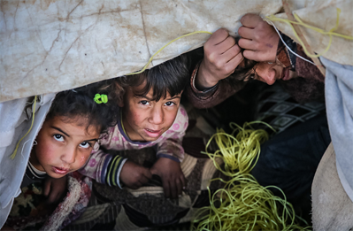
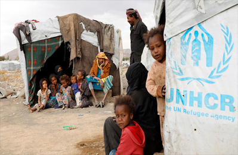
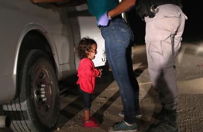

数以百万计背井离乡的儿童往往在数据中并不可见，因此许多人无法真正获得国家或地方服务，
在跨越国界时落入儿童保护系统的裂缝。随着世界挑战的不断加剧和全球治理不稳定性的提升，
未来的儿童移民数量仍然存在上升的可能。
世界并未停止为保障儿童移民权利而努力的脚步
根据联合国《儿童权利公约》（Convention on the Rights of the Child）： 在过去一年共呼吁募集103亿美元，向超过1.1亿儿童提供人道主义援助。 在相关保护法律方面，各国的合作也不断深入。
图9 按区域分布的批准《儿童权利公约》的国家数量
数据来源：United Nations Treaty Collection(2024)
图10 按区域分布的批准《难民地位公约及其议定书》的国家数量
数据来源：United Nations Treaty Collection(2024)
“保护儿童移民，全世界在行动！”
-

措施一：保护儿童难民免受剥削和暴力，特别是寻求庇护或身份地位的无人陪伴儿童。
-

措施二：结束对寻求庇护者的关押。
-
措施三：保持家庭团聚是保护儿童的最佳方式，并为儿童提供合法地位。
-
措施四：确保所有难民和移民儿童都能获得健康和其他优质服务。
-

措施五：促使采取行动解决难民和移民大规模迁移的根本原因。
-

措施六：采取措施打击仇外心理、歧视和边缘化，并在过境和目的地国家促进这些措施。
倾听他们的声音并尊重他们发表意见的权利
国际组织的做法具有很好的引领作用。但我们仍然缺乏有效的途径去设身处地地照顾儿童移民的复杂心境。 所以，要想切实增进儿童福祉，还需要倾听他们的声音并尊重他们发表意见的权利。
数据来源：UNICEF：A right to be heard-interactive data visualization（2018）
2024年伊始，儿基会发布报告《Prospects for Children in 2024:
Cooperation in a Fragmented World》，
称全球儿童的处境依旧不容乐观，他们可能面临更多的暴力和战争及经济困难等困境。
但至少，我们对儿童移民的脆弱性有了更加深刻的认识，这将继续让人们对孩子们生存境况保持普遍关切，
还能让决策者和行动者对现有的措施进行反思，运用更加有效的手段去保障儿童的权利。
另外，全球动荡导致的不良后果、局部地区的紧张局势，将持续影响儿童移民的计划和迁徙，
不断改革的移民政策也会加剧他们的不安全感。在相当长一段时间里，这个问题仍是全球动荡中的待解困局，
除了给予更加充分的关注，我们别无他法。
自始至终，我们都需要明白：现实本不该如此。
儿童移民所遭受的苦难和排挤是不可接受的，也是可以避免的。
每一个孩子，都应该生活在阳光之下。